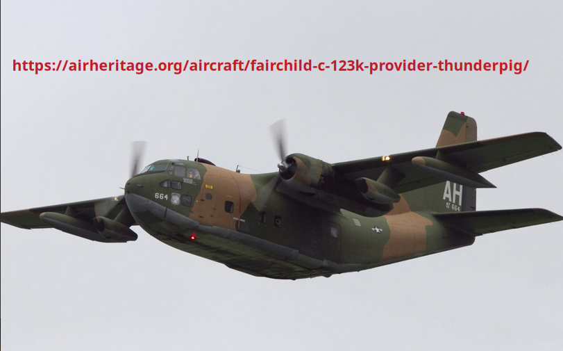
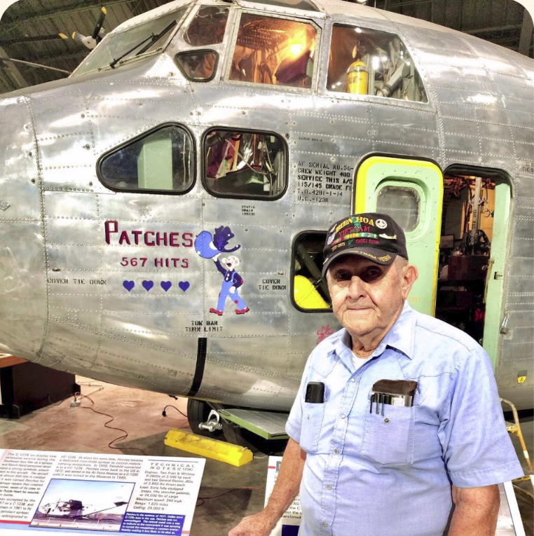
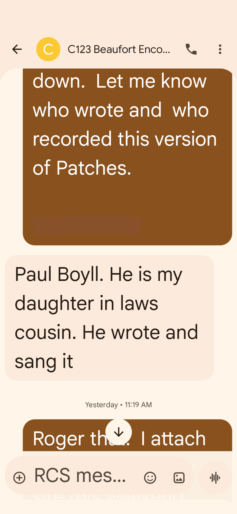
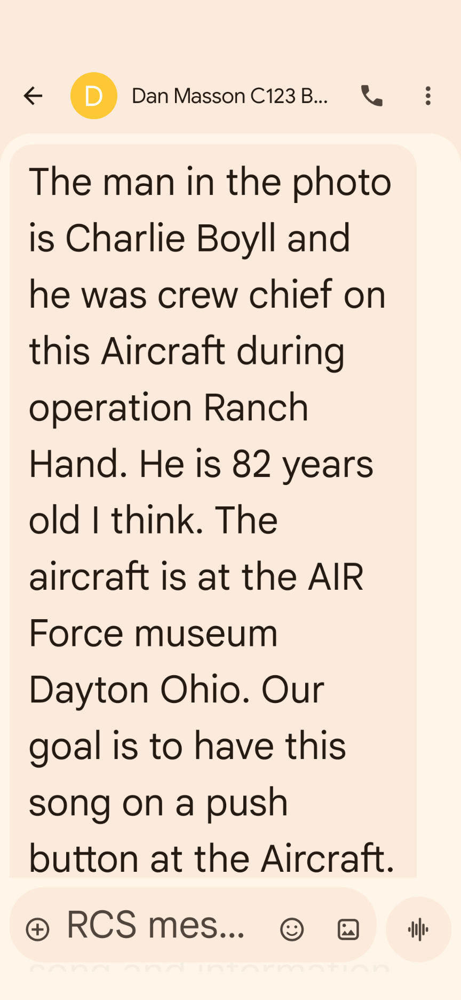
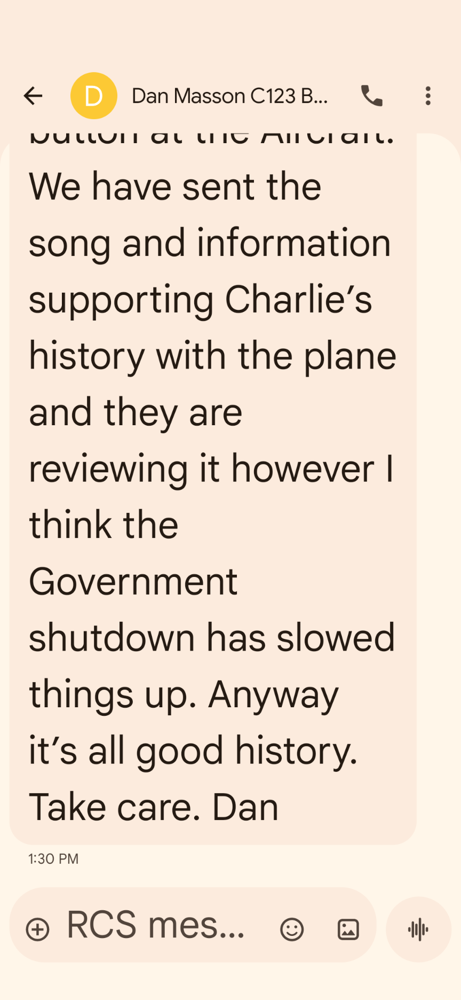

Abbott Analytical Products
Page Sponsored by Abbott Analyitcal Products
Copyright © 1988 - 2025 by
Abbott Analytical Products. All Rights Reserved.
A Chance Encounter with Patches
This web page contains a set of links leading to the details concerning a USAF aircraft from the Vietnam War that resulted from a
chance encounter between two old Vets both on canes who met on a beautiful afternoon on the Beaufort, NC boardwalk/pier.
While the ladies exchanged pleasantries the Vets (Dan and Tom) began the story telling. The highlight of the "story telling" was Patches
and the effort to insure a place in history.
The audio file and information specific to Patches was provided by Dan Masson.
Patches
- Patches the song by Paul Boyll
-  One of Patch's crew chiefs: Charlie Boyll
- Song authorship authenticated by Dan Masson
- Provenance 01 provided by Dan Masson
- Provenance 02 provded by Dan Masson
- Borrowed photo of C123 named "Thunder Pig" from Air Heritage Aviation Heritage
NOTICE: This site was fabricated for best viewing using
Netscape 4.x, or a functionally
equivalent browser.
Please send comments or questions using e-mail, voice telephone at 919-846-7705. (Last update: November 9, 2025 luz)
{kind=link}
{kind=link}
{kind=link}
{kind=link}
{kind=link}